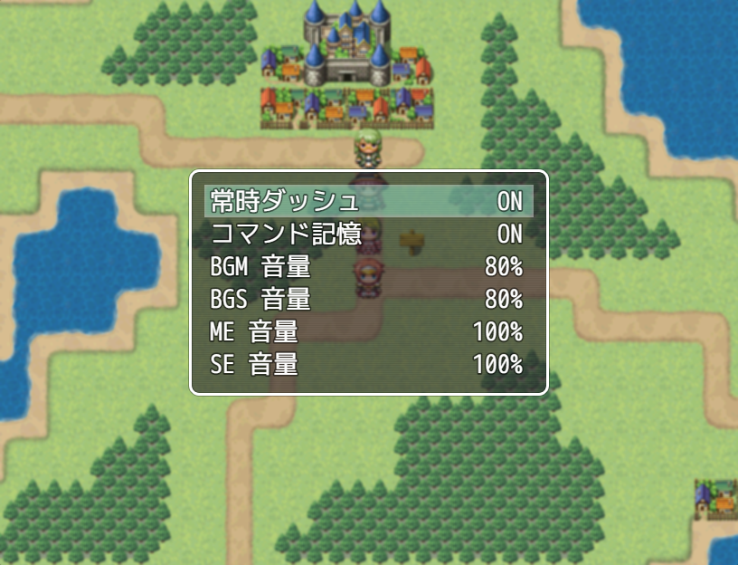
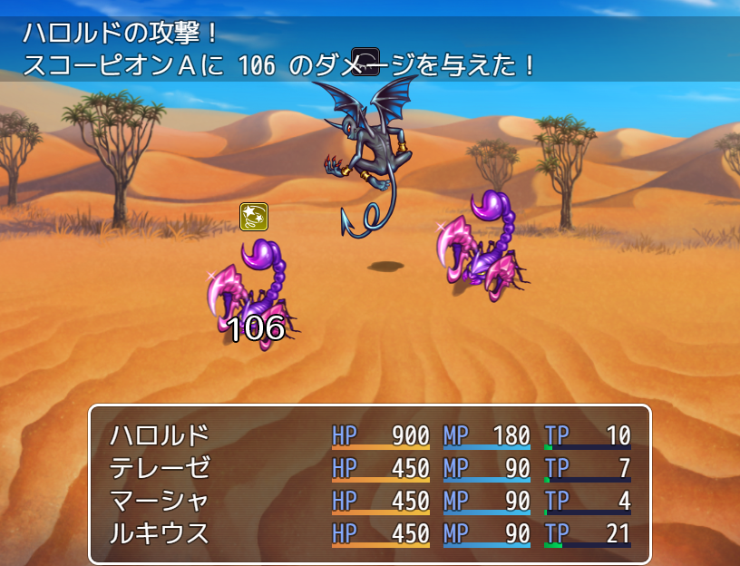

ゲーム
RPGツクールMVで作るゲーム内の機能も強化されました。
主な特徴
- ゲームのウィンドウサイズがドラッグで変更可能になりました。
- 決定キーを押しっぱなしで連打扱い、イベントを倍速処理できるようになりました。
- メニュー画面に［オプション］コマンドが追加されました。

- 戦闘のテンポが従来よりも速めに調整されました。
- 戦闘中、行動対象の選択時に対象の画像が点滅するようになりました。
- 戦闘中にダメージの数値がポップアップ表示されるようになりました。

- 敵キャラの頭上にステートアイコンが表示されるようになりました。
- 最後に使用したスキルが、移動中と戦闘中で別々に記憶されるようになりました。
- マップと戦闘のBGMが同一のとき、演奏を止めずに画面が切り替わるようになりました。
- セーブファイルにゲームのタイトル名が保存されるようになりました。Webにアップロードする場合はサーバー単位で同一の保存領域を使用するため、ゲームを区別するために使用されます。
- セーブファイルの最大数が16個から20個に変更されました。
- ゲームフォルダ内のCSS（/fonts/gamefont.css）の編集によりフォントを変更可能になりました。
※フォントを変更する場合は、同じフォルダ内にフォントファイルをコピーしてください。 - テストプレイ中にF8キーを押すとデベロッパーツールが起動できます。
詳しくは［デベロッパーツールの使い方］の項目をご覧ください。 - プロジェクトフォルダをそのままWebサーバーにアップロードするとブラウザ上でプレイすることができます。
詳しくは、［ゲームプレイの動作環境］の項目をご覧ください。